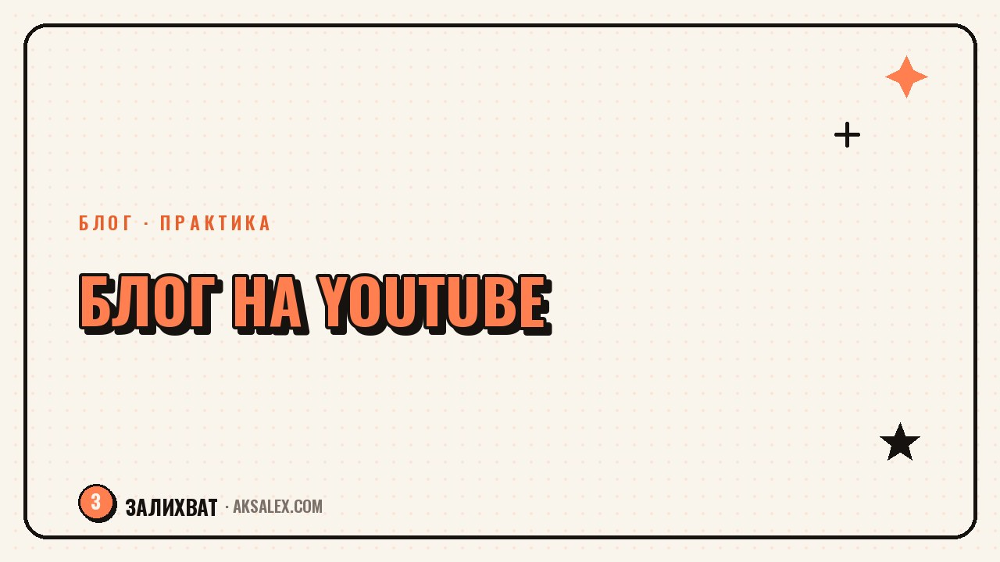

Как вести блог на YouTube с нейросетями: с чего начать

YouTube отличается от Reels и Shorts не только длиной видео, а всей логикой роста: здесь работает поиск и рекомендации на годы вперёд, а не первые сутки после публикации. Это пугает новичков - кажется, нужно сразу снимать профессионально и знать всё про SEO видео. На деле нейросети закрывают большую часть подготовки, и можно начать канал без команды монтажёров.
Чем YouTube отличается от коротких форматов
В Reels и Shorts видео живёт пару дней, а на YouTube ролик собирает просмотры годами благодаря поиску - люди вбивают запрос и находят видео двухлетней давности. Заголовок и описание работают как SEO-текст на сайте, а не как красивая подпись.
Вторая разница - удержание внимания. На YouTube зритель готов смотреть 10-20 минут, если тема раскрыта по делу, а не растянута ради хронометража. Сценарий должен быть структурированным: обещание в начале, развитие по пунктам, вывод в конце.
Что важно понять перед стартом
- Видео работает на поиск месяцами и годами, не только в день выхода
- Заголовок и описание - это SEO-текст, а не только подпись
- Удержание важнее хронометража: лучше 8 минут по делу, чем 15 с водой
С чего начать: ниша, канал, первое видео
Перед съёмкой стоит спросить у нейросети, какие запросы по теме реально ищут на YouTube - это задаёт список первых десяти тем для видео, а не гадание «о чём бы снять». Ниша выбирается на стыке того, что ты знаешь, и того, что ищут люди.
Первое видео не обязано быть шедевром - его задача показать формат канала и протестировать, заходит ли тема. Нейросеть помогает собрать структуру: что сказать в первые 15 секунд, какие три пункта раскрыть по центру и как закончить призывом.
Первые шаги
- Собери список реальных запросов по теме через нейросеть и подсказки поиска
- Выбери формат: разговор в кадре, экран с озвучкой, монтаж из нескольких планов
- Напиши структуру первого видео: обещание, три пункта, вывод
- Сними короткую тестовую версию перед полноценной съёмкой
Сценарий и озвучка с помощью ИИ
Нейросеть помогает превратить сырые тезисы в связный сценарий: ты диктуешь идеи голосом, а дальше просишь собрать из них структуру с переходами между блоками. Это быстрее, чем писать с нуля на пустой странице, и сохраняет твой стиль, если дать ИИ примеры своей речи.
Если не хочется говорить в кадре, голосовые нейросети озвучивают текст живым голосом, а аватары закрывают потребность в лице на экране. Это снимает барьер «страшно показывать лицо» на старте, когда важнее начать, чем выглядеть идеально.
Сценарий с нейросетью экономит время на структуре, но голос и смысл всё равно остаются твои - иначе зритель быстро почувствует шаблонность.
Монтаж, обложка и SEO-описание
Монтажные нейросети режут паузы, подбирают темп и предлагают точки для нарезки на отдельные Shorts из длинного видео - один ролик превращается в контент для двух форматов сразу. Обложка собирается нейросетью за пару минут: яркий фон, крупный текст, акцентный элемент.
Описание под видео стоит писать с ключевыми словами из собранных запросов, а не общими фразами. Нейросеть помогает развернуть тезис в описание с таймкодами, которые упрощают навигацию и нравятся алгоритму поиска.
- Автоматическая нарезка пауз и подбор темпа монтажа
- Генерация обложки с акцентным текстом под тему видео
- SEO-описание с ключевыми словами и таймкодами
Инструменты по этапам работы
| Этап | Задача | Чем помогает ИИ |
|---|---|---|
| Планирование | Поиск тем и запросов | Подсказки по частотным формулировкам в нише |
| Сценарий | Структура и текст | Сборка связного текста из тезисов и голосовых заметок |
| Съёмка | Голос и лицо в кадре | Озвучка текста и аватары для тех, кто не хочет сниматься |
| Монтаж и SEO | Обложка, нарезка, описание | Генерация обложек, автомонтаж, текст описания с ключами |
Не нужно сразу осваивать все инструменты - на старте достаточно одной нейросети для сценария и одного сервиса для обложек, остальное подключается по мере роста канала.
Типичные ошибки новичков на YouTube
Частая ошибка - копировать формат Reels: короткое видео без структуры, рассчитанное на вирусность за один день. На YouTube это работает хуже - алгоритм ценит удержание внимания и соответствие заголовка содержанию.
Вторая ошибка - кликбейт, который не отражает содержание. Зритель быстро закрывает видео, это снижает длительность просмотра, и алгоритм перестаёт рекомендовать канал. Честный заголовок с реальным ключевым словом работает надёжнее на дистанции.
- Не копируй формат Shorts на длинное видео без адаптации структуры
- Не используй кликбейт, который не соответствует содержанию
- Не бросай канал после первых роликов без просмотров - рост на YouTube медленнее, чем в коротких форматах
Частые вопросы
Можно ли вести YouTube-канал без своего лица в кадре
Да, голосовые нейросети озвучивают текст, а AI-аватары закрывают потребность в лице на экране. Это снимает барьер на старте, но живая речь и реальное лицо обычно вызывают больше доверия на дистанции.
С чего начать канал на YouTube новичку
С поиска реальных запросов по теме через нейросеть и подсказки поиска, чтобы выбрать нишу на стыке своих знаний и спроса. Дальше снимается короткая тестовая версия первого видео, чтобы проверить формат.
Как нейросети помогают с монтажом видео для YouTube
Автоматически обрезают паузы, подбирают темп и предлагают точки для нарезки длинного видео на короткие форматы. Это экономит часы ручной работы, особенно на старте канала.
Нужно ли платить за нейросети для ведения YouTube-канала
На старте достаточно бесплатных или недорогих сервисов для сценария и обложек - платные инструменты имеет смысл подключать, когда канал уже растёт и окупает подписку просмотрами.
Почему видео на YouTube растут медленнее, чем Reels
YouTube работает через долгосрочный поиск и рекомендации, а не через всплеск просмотров в первые сутки. Рост требует системности и терпения, а не одного вирусного ролика.
Раз тема оказалась полезной, вот что почитать следующим. Как рассказывать о своём деле так, чтобы люди запоминали и хотели узнать больше.
Читать статью →а не вручную